Fabricação própria, instalação técnica certificada e manutenção rápida para persianas e cortinas residenciais e comerciais — manuais ou motorizadas.
A Técnico Persianas fabrica, instala, dá manutenção e lava persianas e cortinas para clientes residenciais e comerciais — sem intermediários entre quem produz e quem atende.
Da fabricação à manutenção, todo o processo passa pela mesma fábrica — sem intermediários.
Reparo de persianas e cortinas, incluindo modelos externos, negociado direto com quem fabrica para reparos rápidos que prolongam a vida útil do produto.
Equipe técnica certificada, com solução adequada para cada tipo de ambiente e projeto.
Produção própria de persianas e cortinas com acionamento manual ou motorizado, sempre sob medida.
Limpeza técnica que preserva o tecido e o mecanismo, devolvendo a aparência original da peça.
Linha completa fabricada sob medida, do básico ao motorizado.
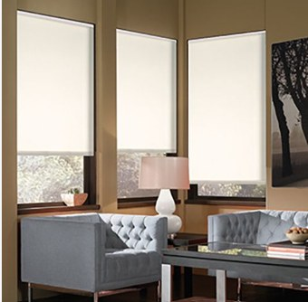
Persiana Rolô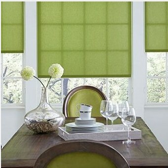
Rolô Colorido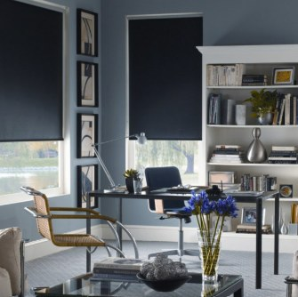
Rolô Blackout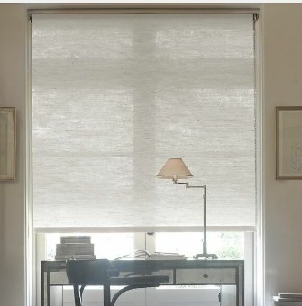
Tecido Especial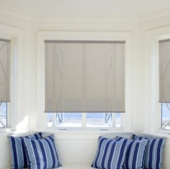
Rolô Translúcida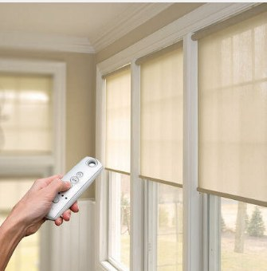
Rolô Motorizada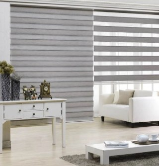
Double Vision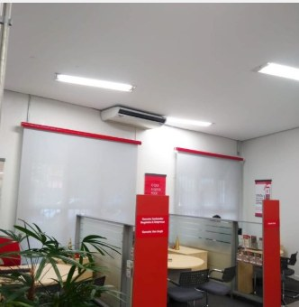
Rolô CustomizadaInstalações reais feitas pela equipe, em ambientes residenciais e comerciais.
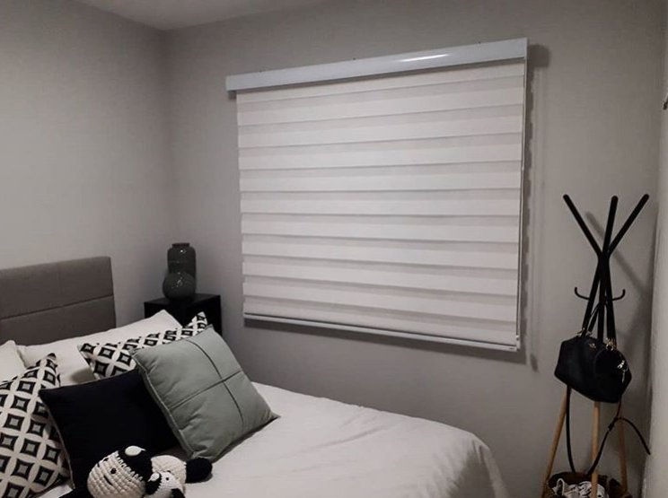
Cozinha — Persiana Translúcida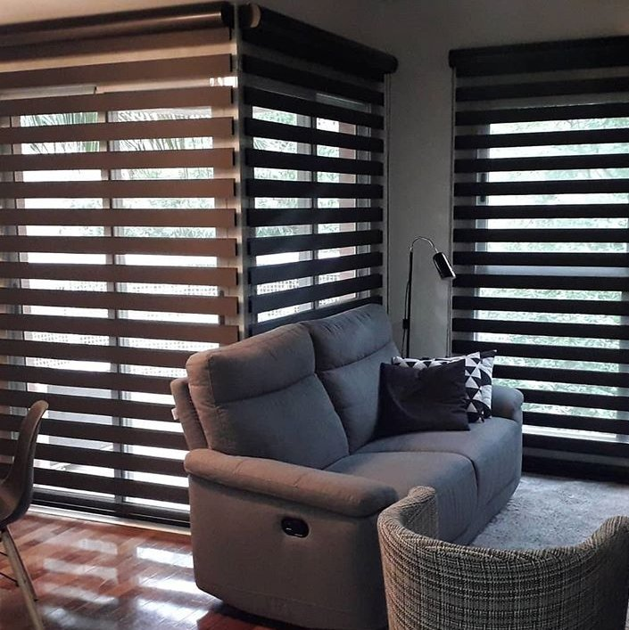
Quarto infantil — Persiana Painel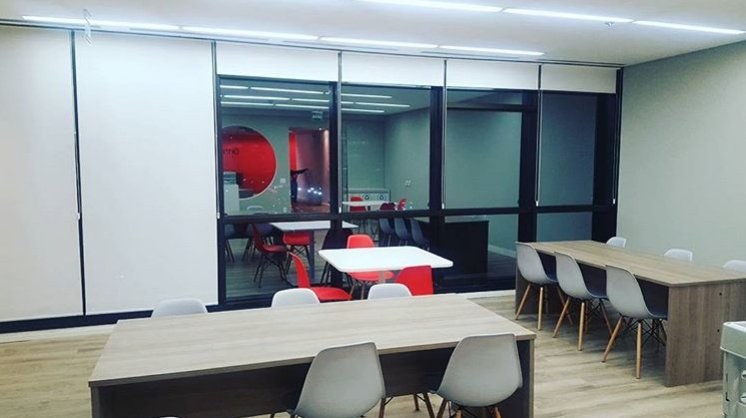
Sala de estar — Persiana Rolô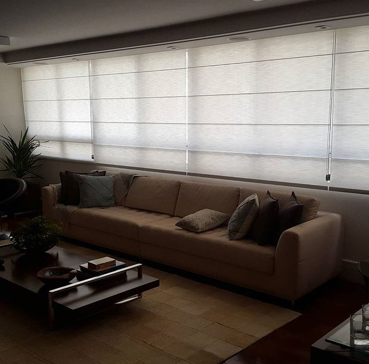
Sala comercial — Persiana Rolô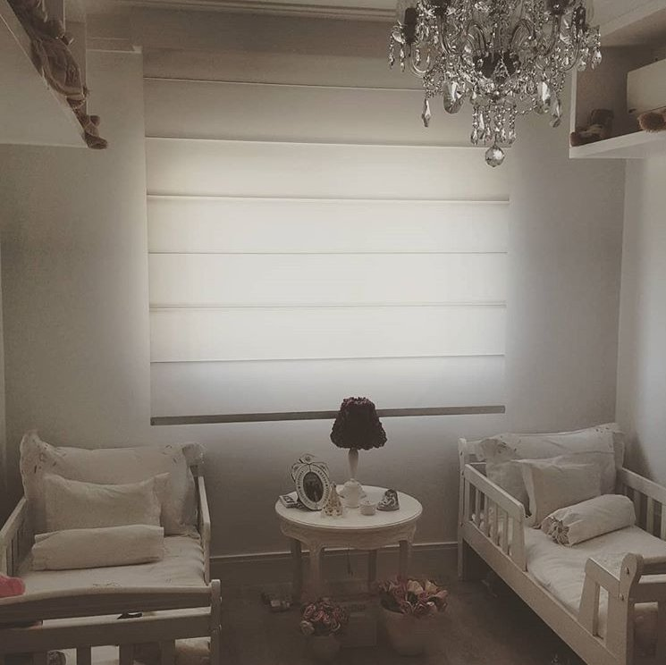
Sala de estar — Double Vision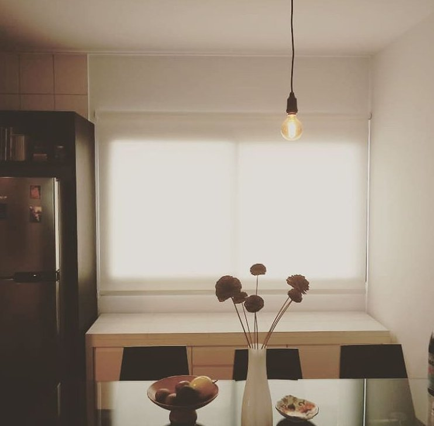
Quarto — Double VisionUma cliente de Florianópolis relatou ter sido bem atendida do início ao fim: recebeu explicação por videochamada sobre como tirar a medida da cortina, teve entrega rápida e suporte ágil pelo WhatsApp mesmo à distância, inclusive na etapa de instalação. Destacou o preço justo e negociável como diferencial.
Carolina Nakara — Esteticista, cliente Técnico Persianas
Atendimento de segunda a sexta, das 9h às 17h, e aos sábados das 9h às 12h, exceto em feriados. Noites e finais de semana são atendidos mediante agendamento prévio.
Sim, remarcações são aceitas com pelo menos 48h de antecedência. Cancelamentos com aviso mais curto têm uma taxa de R$ 50,00, já que os técnicos têm a agenda semanal reservada.
Sim — a limpeza profissional prolonga a vida útil da persiana e é a opção mais econômica no longo prazo, sendo recomendada pela maioria dos fabricantes.
O trabalho é feito com todo cuidado no local. Caso ocorra algum dano, a empresa se compromete a reparar ou substituir o item quando necessário.
Envie as medidas do vão ou tire dúvidas direto pelo WhatsApp — a mesma equipe que fabrica é quem atende.